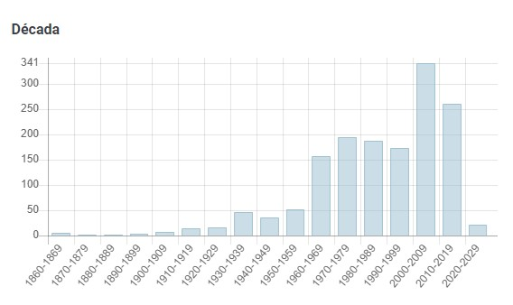

Artigo
O Capim-rabo-de-gato é uma erva perene cespitosa que atinge até 50 cm de altura. De distribuição cosmopolita, cresce principalmente sobre a proteção de árvores e arbustos e em áreas que foram utilizadas para lavoura, sendo portanto uma espécie caracteristicamente ruderal. Pode ser utilizada como forrageira pois é bem aceita pelo gado, porém seu rendimento é baixo. Floresce de outubro a abril, produzindo uma grande quantidade de sementes, o que lhe confere uma elevada ressemeadura natural.
Classificação Científica
Reino: Plantae
Clado: Angiospérmicas
Clado: Monocotiledóneas
Ordem: Poales
Família: Poaceae
Espécie: S.Parviflora
Biomas que ocorre:
- Mata Atlântica
- Pampa
- Caatinga
- Cerrado
Gráfico detalhando os registros de ocorrência
⚠ Cuidado ⚠
Planta em Perigo de Extinção
Como prevenir?
Em casa ou no quintal, plante vida selvagem nativa para atrair polinizadores
Se tiver um quintal, plante flores nativas, árvores e arbustos. Estes fornecem alimento e abrigo para todo o tipo de vida selvagem, incluindo insetos como abelhas e borboletas (que também podem ajudar a polinizar as suas plantas - uma vantagem para todos!) Mas cuidado para não plantar plantas não nativas (também conhecidas como plantas exóticas). Estas são muitas vezes espécies realmente invasivas, que competem ou até mesmo são presas de espécies nativas por alimentos e recursos, aumentando o seu risco de extinção.
Se não tem um quintal, não desespere! Pode experimentar algumas plantas de janela ou de varanda, um alimentador de pássaros de janela, ou qualquer outra coisa pequena.